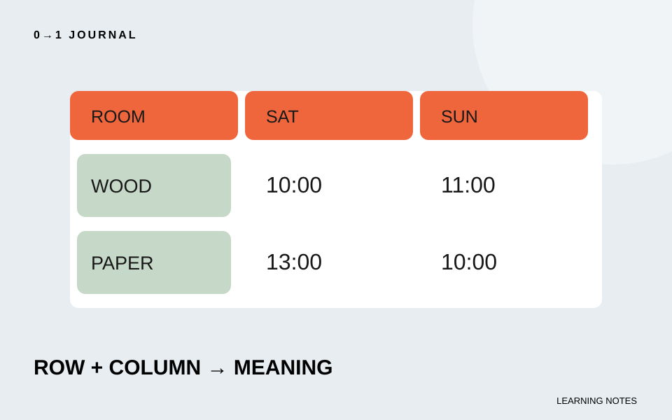

時間割の数字だけを太字にしても、その数字がどの部屋の何曜日を示すかは伝わりません。HTMLの表に見出しを付けるときは、見た目と一緒に、見出しが担当する行や列を指定します。
今回は架空の工作室の利用開始時刻を、部屋と曜日で比べる表にします。セルを結合しない、小さな表に限定します。画面を配置するための枠組みではなく、対応するデータを読むための表です。
一つの値を、行名と列名で説明する
「木工室の土曜日は10時開始」という文を考えます。10時が値、木工室が行の名前、土曜日が列の名前です。この三つがそろって、一つの情報になります。
原稿を表へ移す前に、別の値でも同じ言い方ができるか確認します。行ごとに意味が変わるなら、表を分けた方が読みやすいかもしれません。空欄を使う場合も、休みなのか未確定なのかを原稿で決め、読者の推測に任せないようにします。
この練習では全セルに開始時刻を入れ、例外や複雑な注記は増やしません。まず一段の見出しとデータの関係を完成させましょう。
thとscopeで、見出しの向きを指定する
thは表の見出しセル、tdはデータのセルです。scopeにcolを指定すると列の見出し、rowなら行の見出しを示します。W3C WAIの行と列に見出しがある表の解説で、その対応を確認できます。
次はbody内へ置ける表の断片です。単独のHTML文書に必要なheadなどは省略しています。captionは、この表が何を表すかを示す名前です。
<table>
<caption>工作室の利用開始時刻（練習用）</caption>
<thead>
<tr>
<th scope="col">部屋</th>
<th scope="col">土曜日</th>
<th scope="col">日曜日</th>
</tr>
</thead>
<tbody>
<tr>
<th scope="row">木工室</th>
<td>10時</td>
<td>11時</td>
</tr>
<tr>
<th scope="row">紙工作室</th>
<td>13時</td>
<td>10時</td>
</tr>
</tbody>
</table>
すべてをtdで作り、最初の行だけ太字にするのが見落としやすい例です。修正では、曜日と部屋名をthにし、それぞれの向きを指定します。太字かどうかではなく、データを説明する役割で選びます。
表の名前と、ページの見出しを分ける
captionが「表1」だけだと、何の表かを知るには周囲を読み直す必要があります。「工作室の利用開始時刻」のように内容を示しましょう。ページの見出しは節を分けるもの、captionはこの表を識別するものとして使います。
ページ全体の見出し構造は、h2とh3を内容の親子で選ぶ記事で扱っています。表に見出しを付けても、ページの節の構造が自動で整うわけではありません。
狭い画面では、文字が欠けずに読めるかも確認します。表を画像に置き換えるだけでは、行と列の関係をHTMLで持たせた今回の目的から離れます。この小さな例で収まらない場合は、まず不要な固定幅や大きすぎる余白がないか調べてください。
15分を目安に、四つの時刻を文章で読む
各データセルについて「どの部屋の何曜日か」を紙に書き、対応するthとscopeを確認します。次に行の順番を入れ替え、時刻と部屋の組が崩れていないかを見てください。
読み上げ環境が使える場合は、表内を移動し、データと見出しの関係が伝わるかを確かめます。使えなければ、その確認は未実施と残します。無料レッスンでHTMLの役割を復習しながら、今回は表の名前と二方向の見出しを完成条件にしてください。
記載内容へのご質問や訂正のご連絡は、hello@junkbranding.comまでお願いします。